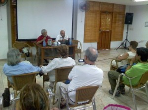

By: Camilo García Lopez-trigo.
La colección SurEditores ha propuesto para esta ocasión de la Feria del Libro una nueva revisitación a la obra y al legado de José Lezama Lima, con la reedición de dos textos importantes de entrevistas a ese trascendental escritor cubano de todos los tiempos: Así hablaba Lezama Lima, de Ciro Bianchi, and To read under a Sycamore tree, de Félix Guerra.
Al presentar el primero de estos libros, el poeta Alex Pausides lo destacaba como un excelente trabajo que permite tener una visión completa de Lezama, pues se logra tener “múltiples abordajes y visiones, un mosaico de posibilidades para acercarnos al mundo de Lezama: desde la novela, la poesía y muchas otras aristas, que lo convirtieron en un autor capital de las letras cubanas”.
Para Ciro Bianchi, quien vive convencido de que “el destino último del periodismo es el libro”, el proyecto le posibilitó reunir en un solo texto varias entrevistas que diversos autores le hicieron al escritor en un trabajo de recolección que le llevó años y no pocos esfuerzos, inside and outside the country, para tener la mayor diversidad de temas y enfoques. Como indica en el prólogo, Lezama “no rehúye la pregunta difícil, aunque aclare que existen temas que si no nos preguntan sobre ellos, sabemos qué responder y que hacen que quedemos sin respuesta ante la interrogación directa”.
Reconoció que, durante años en su juventud, se dedicó a “cazar” a Lezama en cuantas conferencias y tertulias literarias podía encontrársele, hasta que finalmente le hizo en 1970 la entrevista que publica en este libro y que titula Asedio a Lezama Lima. En ella se pueden disfrutar abundantes detalles de la vida cotidiana del legendario escritor y sus reflexiones sobre los más variados temas.
El segundo libro, To read under a Sycamore tree, es un texto que contiene una sola entrevista: la realizada por Félix Guerra a Lezama durante más de diez años, from 1965 hasta su fallecimiento a mediados de 1976. Con prólogo del poeta Roberto Manzano, la novedad de esta entrega es que contiene un capítulo que no había sido incluido en la edición anterior y que puede dar más luz sobre la vida del escritor.

Resaltó que el libro es “un fabuloso ejercicio de erudición”, como su vida toda, en la cual se habla de cualquier cosa: Marti, del ejercicio de la lectura, del descubrimiento y de los descubridores, de la naturaleza, de la cultura eurocentrista y el mestizaje, del juego espacio-tiempo, de la historia de la historia, del método… siempre con un acompañamiento poético que sólo Lezama le podía dar.
Llamó la atención sobre el minucioso trabajo realizado por Félix Guerra, quien pudo mostrar “la orfebrería del poeta en el arte de la conversación” y logró un diálogo abierto –incluso resbaladizo– con preguntas que llegaron hasta su intimidad, “a veces peligrosas ante el temor de un desplante”.
On the other hand, Félix Guerra contó detalles del esfuerzo ante la ingente tarea que se había propuesto, sobre todo porque a Lezama no le gustaba hablar ante grabadoras –asumía una actitud distante que malograba el sentido de la entrevista–, por lo que en gran parte de ella tuvo que apelar a la memoria, repasando con el escritor y llegando a acuerdos sobre el texto definitivo.
De particular interés resultó su confesión de que la entrevista surgió de una intuición: por razones familiares, y por su labor de joven poeta, conoció a varios de los grandes escritores cubanos de los años 60 and, a partir de “los prejuicios religiosos y la homofobia” de la época –que parecía que un escritor de tanta magnitud “se nos iba de la unidad nacional, que nadaba en otras aguas”–, se podía correr el riesgo de perder su legado.
A partir de su contacto con él –que “hablaba con tanto énfasis de Martí y de nuestra historia”–, descubrió que esas cosas que se decían de él “no tenían importancia, eran cosas de la ideología del momento” y, ante el peligro de tener “una escisión con esa parte tan importante de la cultura nacional”, decidió comenzar la entrevista.
“En nombre de la historia de la nación sentí que era necesario hacer este libro”, reaffirmed. En una historia y una cultura tan amplia como la cubana, donde hay tantos héroes de tantas tendencias y colores, “si dejamos cerrar la idea de la nación cubana, entonces tendremos una visión demasiada estrecha de nuestros orígenes”.
Recordó la “feroz lucha ideológica” de entonces y la ayuda que recibió en su formación de su propia familia –que calificó como “una fusión de la cultura cubana”, un mosaico entre el blanco y el negro, entre el habanero y el del interior, entre tantas cosas diversas–, que le ayudó mucho a entender y superar cualquier obstáculo.
Tanto que, a través de los años de entrevista, al final ya eran amigos. Y gracias a esa amistad, podemos disfrutar ahora de un diálogo extraordinario con ese gran maestro de la literatura cubana.


Recent Comments